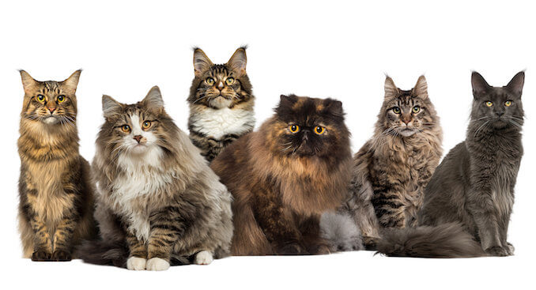
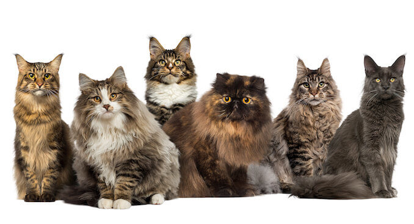

Common health issues in cats include dental problems, obesity, urinary tract issues, hairballs, respiratory infections, parasites, diabetes, hyperthyroidism, allergies, and behavioral issues. Regular veterinary check-ups, a balanced diet, proper grooming, and prompt attention to any changes in behavior are essential for maintaining a cat's well-being.
Symptoms include sneezing, nasal discharge, and eye discharge. Caused by viruses like feline herpesvirus and calicivirus.
FeLV and FIV weaken the cat's immune system, making them vulnerable to infections. Spread through close contact with infected cats.
An immune-mediated disease caused by a coronavirus. Can affect the abdominal organs or the chest.
Symptoms include frequent urination, straining, and blood in urine. Common in older cats, and can be influenced by diet and hydration.
Insulin deficiency or resistance leading to high blood sugar. Symptoms include increased thirst, urination, and weight loss.
Periodontal disease, gingivitis, and tooth resorption are common. Regular dental care is crucial to prevent these issues.
Overweight cats are prone to various health issues, including diabetes and arthritis. A balanced diet and regular exercise are essential for weight management.
Overactive thyroid gland leading to increased metabolism. Symptoms include weight loss, increased appetite, and hyperactivity.
Common in older cats, causing gradual loss of kidney function. Symptoms include increased thirst, weight loss, and lethargy.
Inflammatory bowel disease (IBD) and gastroenteritis are common. Symptoms include vomiting, diarrhea, and weight loss.
External parasites like fleas and ticks, as well as internal parasites like worms. Regular deworming and parasite prevention are crucial.
Cats can develop various types of cancer, including lymphoma and mammary tumors. Early detection and veterinary care are vital for treatment.
 


Possible Causes: Dietary indiscretion, hairballs, infections, toxins, or underlying health issues.
Possible Causes:Dietary changes, parasites, infections, allergies, or gastrointestinal issues.
Possible Causes:Illness, pain, stress, or underlying health problems.
Possible Causes: Dental issues, digestive problems, kidney disease, or systemic illness.
Possible Causes:Hyperthyroidism, diabetes, gastrointestinal issues, or dental problems.
Possible Causes:Diabetes, kidney disease, hyperthyroidism, or urinary tract issues.
Possible Causes: Respiratory infections, allergies, or dental problems.
Possible Causes:Respiratory issues, heart problems, or lung diseases.
Possible Causes:Stress, pain, or underlying health issues affecting behavior.
Possible Causes: Allergies, parasites, skin infections, or hormonal imbalances.
Possible Causes: Conjunctivitis, infections, or underlying eye issues.
Possible Causes:Joint issues, injuries, or systemic illnesses affecting mobility.
Possible Causes:Pain, anxiety, or cognitive issues, especially in older cats.
Possible Causes:Epilepsy, toxins, or neurological disorders.